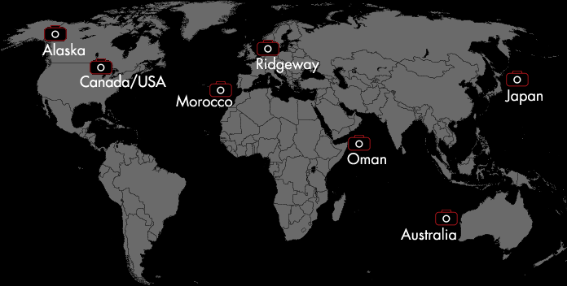
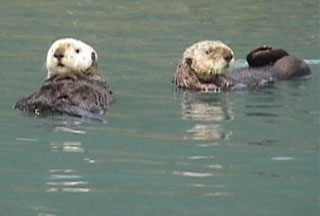
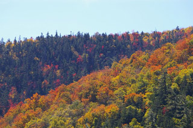
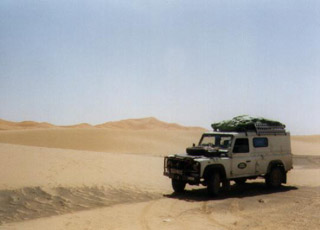
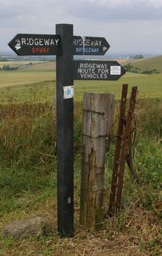
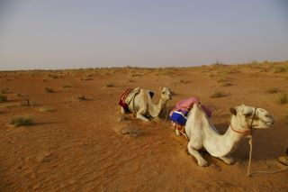
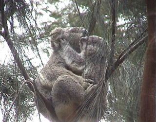
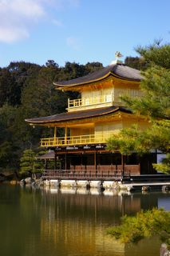

Travel
- Alaska
- As a volunteer for Earthwatch I got to fulfil my dream of working with my favourite animal, the sea otter. Speeding through the Alaskan waters with my video camera by my side, I made a short documentary film for the charity to show at publicity events, and to express my admiration for these amazing creatures.
- Canada & the USA
- I went across Canada and back via the USA to attend a conference and meet up with some of my friends scattered across the continent.
- Morocco
-  Sam needed a navigator for his first Saharan Land Rover odyssey, so he called me up. Armed with my somewhat flaky GPS and with Abbie on board too, we crossed Europe to explore the Moroccan deserts.
- Ridgeway
- The western half of The Ridgeway long-distance footpath is all accessible to cycles - and for three glorious summer days we explored stone circles and crop circles in ancient landscapes.
- Oman
- In Oman I trekked the endless sands of the desert on the back of a camel, and swum in the deep blue sea with a turtle.
- Australia
- After working in Perth for three weeks I took two weeks to travel up and down the west coast, paddling with dolphins and watching bounding kangaroos. I made a short film with my video camera.
- Japan
- In Japan I took the bullet train, watched monkeys play in the icy pools, stayed in a Buddhist monastery, and explored the streets of modern Tokyo, the ancient temples of Kyoto and the memorials of Hiroshima.
These links will take you to travel mini-sites, which I like to write after each adventure.